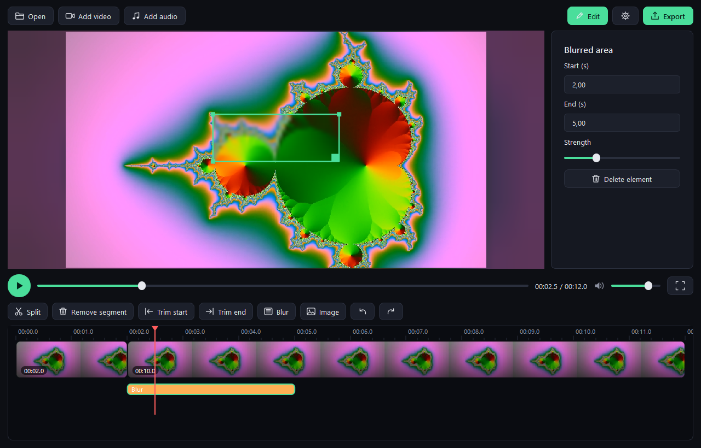
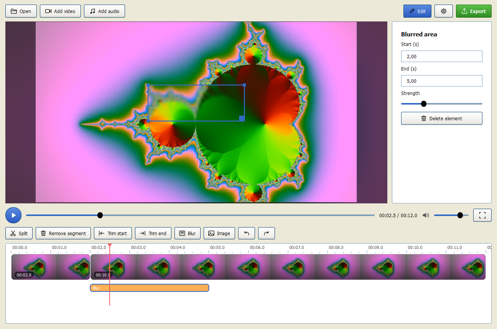

Cutline is a simple video editor. Open a clip, cut it, blur what needs hiding, add music, export. No projects, no import, no clutter – just the tools you actually use.

Most editors make you learn them first. Cutline gets out of the way: everything sits on one screen, and every button does what its icon says.
Drag a video in and it plays. No import, no project files, no waiting for previews to render.
Trim, split, speed up, blur, add images, video and music – one timeline, one toolbar, one key per action.
Pick resolution, frame rate and quality. Cutline only offers what fits your source, so files never get bigger for nothing.
A short list, done properly.
A calm interface with soft ambient light around your video – and themes for every taste, from mint dark to full Windows XP.

Free for everyone. Pick your system – every download comes straight from GitHub Releases.
Portable – unzip and run Cutline.exe. Includes everything, Windows 10 or newer.
Cutline-windows-x64.zipFor Debian, Ubuntu, Mint and friends.
sudo apt install ./cutline_amd64.deb
cutline_amd64.debNative package for Arch, Manjaro and EndeavourOS.
sudo pacman -U cutline-x86_64.pkg.tar.zst
cutline-x86_64.pkg.tar.zstAny other distribution. Needs Qt 6 from your package manager.
tar xf cutline-linux-x86_64.tar.gz && ./cutline-linux-x86_64/install.sh
cutline-linux-x86_64.tar.gzOn macOS the app is not notarized: right-click Cutline → Open the first time. Not sure which Mac you have? Apple menu → About This Mac.
Short answers.
Yes. Cutline is open source under the MIT license – free to use, share and change.
Never. Your files stay untouched. Cutline only writes a new file when you export.
mp4, mov, mkv, webm, avi and more. Exports are mp4 (H.264 + AAC), which plays everywhere.
Windows and macOS builds include everything. The .deb and Arch packages pull in Qt and ffmpeg from your distribution automatically; the tar.gz needs Qt 6 installed.